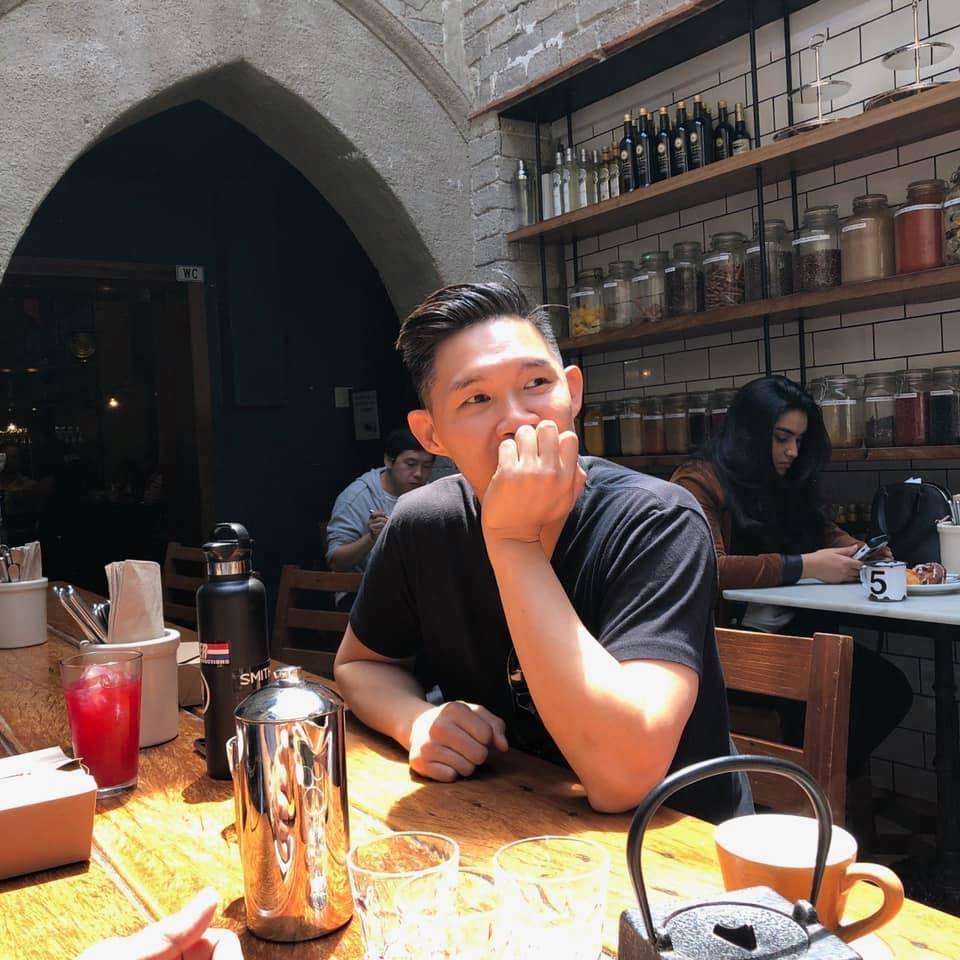

github.com/lymaninsures
linkedin.com/lymanchao
Lyman Chao
San Francisco, CA
415-840-5699
lymanchao1@gmail.comgithub.com/lymaninsures
linkedin.com/lymanchao
Resume
Experience
Fyform | San Francisco | 2019 - Present
Co-Founder/Junior Software Developer
- Defined product backlog and learned to adjust timeliness in deliverables.
- Conduct troubleshooting techniques and identify and address issues.
- Discovered a cost-effective PDF form automation solution, otherwised would have stopped the project.
- Streamline roadmaps by prioritizing features, flushing out user stories, and planning sprints.
- Design and implement data models, business logic and install front end theme templates.
Lyman Chao Insurance Agency INC | San Francisco, CA | 2016 - 2019
Principal / Owner
- Coordinate innovative strategies to accomplish marketing objectives and boost long-term profitability including brand communication strategies, brand research, and brand recognition.
- Provide day-to-day leadership in all areas of operations including costs, schedules, resources while driving end-to-end of comprehensive insurance services to each client.
- Cultivate and uphold professional relationships with corporate resources to increase productivity and profits.
- Identify and resolve customer issues which promoted brand loyalty and maximized customer retention.
- Strategize and identify revenue opportunities which improved operational effectiveness for a portfolio of 3600+ accounts.
Charter Risk management Inc. | San Francisco, CA | 2012 to 2016
Principal / Partner
- Trained qualified staff and built and managed high performing sales and customer service team.
- Fostered positive relationships to increase accessibility to new markets.
- Developed document organizational program reducing policy quote turnaround time for agents by 25%.
- Developed touch point initiative to increase retention rate of clients by 35%.
Wall Industries | Shanghai, China | 2008 - 2012
Business Development Manager
- Developed and initiated projects, including managing costs, schedule, and performance to meet client's needs.
- Improved product marketing objectives by analyzing markets and staying competitive within the industry.
- Developed and matured relationships within the fabric industry to promote brand and generate new business.
- Drove team success while managing cross-functional teams and maintaining on-time delivery of projects.
- Maintained existing relationships with multiple industries which increased revenue, including the hotel industry, furniture manufactures, and designers.